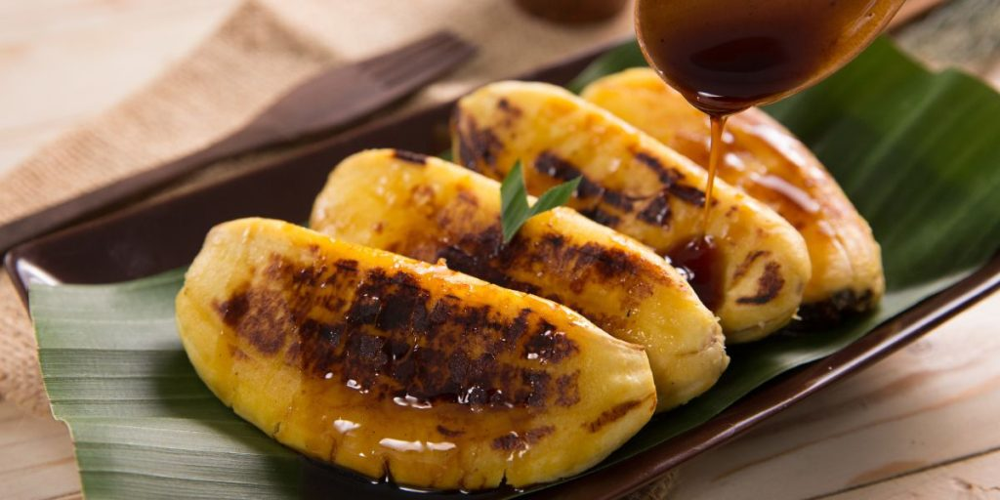

Pisang Epe
Pisang Epe adalah makanan khas Sulawesi Selatan, terutama dari Makassar. Pisang kepok yang dibakar dan dipipihkan ini disajikan dengan saus gula merah yang harum dan manis, menjadikannya camilan sore yang sempurna.
Bahan-bahan:
- 5 buah pisang kepok yang matang (tidak terlalu lunak)
- 200 gram gula merah
- 100 ml air
- 1 lembar daun pandan
- Sejumput garam
- Margarin secukupnya untuk olesan
Cara Membuat:
- Panaskan teflon atau alat panggang, olesi dengan sedikit margarin.
- Bakar pisang kepok di atas teflon hingga kedua sisinya berwarna kecokelatan.
- Setelah matang, angkat pisang dan pipihkan menggunakan alat pipih atau piring datar.
- Untuk membuat saus gula merah, rebus gula merah dengan air, daun pandan, dan sejumput garam hingga gula larut dan teksturnya mengental. Saring jika perlu.
- Susun pisang yang sudah dipipihkan di atas piring saji, lalu tuangkan saus gula merah di atasnya.
- Sajikan Pisang Epe selagi hangat untuk rasa yang lebih nikmat.
Pisang Epe sangat cocok dinikmati bersama teh atau kopi di sore hari. Anda juga bisa menambahkan taburan kelapa parut atau keju sebagai variasi.
Tonton Video Tutorial:
Klik link berikut untuk menonton video tutorial: Tonton Tutorial Membuat Pisang Epe
Back to Home